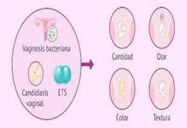
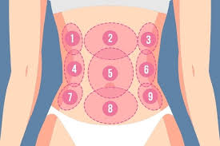

Síntomas de
las its
Las infecciones de transmisión sexual (ITS) y las enfermedades de transmisión sexual (ETS) representan un problema de salud muy grave a nivel global. Más de 1 millón de personas contraen uno de estos cuadros cada día en todo el mundo y, aunque muchos las tengan normalizadas, son causantes de importantes cargas de morbilidad y mortalidad. Si no se tratan, algunos de estos cuadros pueden derivar en infertilidad, inflamación crónica, problemas neurológicos e incluso cáncer.Frenar la expansión de las ETS es cosa de todos. Para lograrlo, es necesario establecer protocolos diagnósticos certeros y ponerse en manos de un profesional médico ante cualquier duda o señal extraña. Con fines tanto divulgativos como médicos, en las siguientes líneas te mostramos 15 síntomas comunes que indican una ETS. Hablar con libertad y claridad de este tema es sin duda el primer paso para combatirlo.
1. Descarga vaginal anormal
Las descargas vaginales son eventos fisiológicos normales para las personas con aparato genital femenino. En general, este fluido no tiene un olor desagradable, es claro o blanquecino de color y presenta una consistencia variable que se puede describir como pegajosa, húmeda y espesa. La periodicidad y características de las descargas vaginales varían entre muchos factores, como la fase del periodo menstrual, la toma de anticonceptivos, las relaciones sexuales recientes y un posible embarazo, entre otras.
Cuando la descarga vaginal es de color verdoso o amarillento, es momento de sospechar de una tricomoniasis, gonorrea u otras ETS. Además de los cambios en el tono y la consistencia, también se puede notar un olor muy desagradable. Sin ninguna duda, cualquiera de estos síntomas por sí solos suponen un motivo de visita al médico.
2. Descarga uretral anormal
La uretra es el conducto por el que se expulsa la orina contenida en la vejiga. Aunque todas las personas tengan uretra, cuando nos referimos a una descarga uretral anormal fijamos nuestra atención en aquellas con aparato genital masculino. En caso de normalidad, ningún líquido que no sea orina, semen o fluido preseminal debería salir por el pene.
Los agentes principales de la descarga uretral anormal masculina son Neisseria gonorrhoeae (gonorrea) y Chlamydia trachomatis (clamidia), ambos responsables de ETS extremadamente comunes en la población general. Este signo clínico es muy evidente y suele acompañarse de otros que veremos en siguientes líneas.
3. Dolor al orinar
El dolor al orinar, también conocido como disuria, es uno de los síntomas más reconocibles de las ETS. El herpes genital, la clamidia, la gonorrea, la tricomoniasis, la infección por Mycoplasma y la infección por Ureaplasma son solo algunos de los cuadros infecciosos que pueden cursar con este signo tan desagradable. Otras muchas infecciones bacterianas no asociadas al ámbito sexual también provocan infecciones del tracto urinario y generan disuria.
De todas formas, existen otras muchas razones por las que se puede experimentar dolor al orinar. El cáncer de próstata, la hiperplasia prostática benigna, los cálculos renales, la diverticulitis y el cáncer de vejiga son solo algunas de ellas. Por esta razón, este síntoma no siempre se asocia a la aparición de una ETS (aunque requiere atención médica en todos los casos).
4. Dolor al mantener relaciones sexuales
Las infecciones de transmisión sexual más comunes suelen causar irritación y daños en los tejidos genitales afectados. Por ello, no es para nada de extrañar que las relaciones sexuales se conviertan en un problema durante una ETS.
Si sientes que el placer se convierte en malestar, sobre todo si ocurre acompañado de otros de los signos citados, lo mejor es parar cualquier acto sexual y acudir al médico cuanto antes. También se recomienda evitar todo contacto sexual hasta el momento del diagnóstico con el fin de evitar contagios innecesarios.
salud proactiva
5. Verrugas genitales
El término virus del papiloma humano o VPH a secas engloba a un grupo de más de 200 virus, de los cuales unos 40 pueden afectar al área genital. Muchas infecciones por VPH son asintomáticas, pero ciertas variantes son capaces de manifestarse como verrugas genitales. Algunos de los lugares de aparición más comunes son:
· Vulva.
· Paredes de la vagina.
· Área entre genitales externos y ano.
· Conducto anal.
· Cuello del útero.
· Punta del pene.
· Cuerpo del pene.
· Escroto.
Tejido circundante al ano.
En este apartado, cabe destacar que algunos VPHs están englobados en los grupos de “alto riesgo” y tienen capacidad de provocar cáncer. Destacamos los VPH-16 y VPH-18, causantes de al menos el 70 % de los cánceres de cuello uterino. Realizarse la prueba diagnóstica ante cualquier duda es esencial para prevenir cuadros tan graves como este.
6. Sangrado vaginal entre periodos
El sangrado vaginal entre periodos puede ser signo de diversas ETS, como la clamidia o la gonorrea ya nombradas. De todas formas, no siempre se atribuye a microorganismos transmitidos a través del contacto sexual. Esto también es señal de endometriosis, pólipos uterinos, inflamación cervical, embarazo ectópico, aborto y algunos tipos de cáncer.
Curiosamente, el sangrado vaginal también puede ser signo de algunas de las complicaciones de ETS en un principio asintomáticas, como es el caso de los VPH de alto riesgo y el cáncer cervicouterino. Además, aunque la propia ETS no cause sangrado vaginal en sus estadios iniciales, si desemboca en una enfermedad inflamatoria pélvica (EIP) sí puede aparecer este signo.
7. Dolor en la parte baja del abdomen
La clamidia y la gonorrea son unos de los principales desencadenantes de la enfermedad inflamatoria pélvica (EIP), una infección de los órganos reproductores femeninos. Si se deja pasar el tiempo tras contraer una ETS, el agente patógeno puede expandirse más allá del área genital y llegar al útero, los ovarios y otros tejidos reproductivos. Esta complicación se traduce, entre otras muchas cosas, en dolor en la parte baja de espalda y abdomen. En este punto, demorar el tratamiento aumenta el riesgo de infertilidad.
8. Frecuencia urinaria aumentada
Las micciones u orinados más frecuentes de lo normal se recogen bajo el término médico poliuria. La clamidia, la gonorrea, la tricomoniasis y el herpes genital son ETS que a menudo se asocian a una frecuencia de micción aumentada.
De todas formas, este evento clínico también puede ser causado por otras muchas condiciones, como hiperplasia prostática benigna, incontinencias urinarias típicas de la avanzada edad, diabetes no controlada, ingesta excesiva de líquidos (polidipsia), tratamientos con fármacos diuréticos y mucho más. Debido a los múltiples factores asociados a esta enfermedad, se recomienda acudir al médico para obtener un diagnóstico fiable cuanto antes.
9. Llaga (chancro)
Este apartado es algo más específico, pues no es uno de los síntomas comunes de todas las ETS y marca el inicio de una infección concreta: la sífilis, provocada por el microorganismo Treponema pallidum. El chancro es una pequeña llaga que aparece en el lugar de entrada de la bacteria. En general, este síntoma se presenta a las 3 semanas de la exposición y es indoloro.
La sífilis es una enfermedad de transmisión sexual muy seria. Si no se trata, es capaz de evolucionar a un cuadro secundario con erupciones cutáneas por todo el cuerpo, una fase latente y una etapa terciaria. Hasta el 30 % de las personas no tratadas sufren sífilis terciaria, con el consiguiente daño cerebral, cardiovascular, hepático y sistémico en general. La sífilis terciaria puede ser mortal.
10-15. Otros síntomas de ETS
En estos apartados, te hemos mostrado diversos síntomas que se asocian a las ETS más comunes en la población general. Aunque hemos cubierto (casi) todas las experiencias habituales a la hora de contraer una enfermedad de transmisión sexual, hay ciertos signos que, aunque no son tan comunes, merecen ser tenidos en cuenta. Los citamos de forma somera en la siguiente lista:
· Dolor de garganta: este síntoma puede ser indicio de una gonorrea oral, es decir, una infección que se ha asentado en la región orofaríngea a través del sexo oral.
· Fiebre: la fiebre es uno de los síntomas principales de la infección por VIH en su etapa temprana. También puede revelar que una infección en el tracto genital se está expandiendo a otras partes del cuerpo.
· Fatiga: un signo clínico inespecífico de diversas ETS, como el VIH o la sífilis.
· Mayor riesgo de padecer otras infecciones: algunas ETS como el VIH deprimen el sistema inmunitario del paciente, facilitando que otras bacterias y agentes patógenos entren en el cuerpo y proliferen. Otras generan llagas/lesiones visibles que son un vehículo de entrada excelente para microorganismos patógenos.
· Escalofríos: los escalofríos suelen ser síntomas de ETS bastante serias, como el VIH en su etapa temprana/tardía y la sífilis terciaria.
· Dolores musculares generalizados: otro indicio de ETS severa o que se ha expandido más allá del área genital es el dolor óseo, muscular y articular. Sin duda, este signo clínico amerita una visita a urgencias.
Cuándo consultar al médico
Consulta de inmediato con un profesional de atención médica si:
· Eres sexualmente activo y podrías haber estado expuesto a una infección de transmisión sexual.
· Tienes síntomas de una infección de transmisión sexual.
· Programa una cita con un profesional de atención médica en estos casos:
· Cuando pienses en dar comienzo a tu actividad sexual o al cumplir 21 años, lo que ocurra primero.
· Antes de comenzar a tener relaciones sexuales con una nueva pareja.
Causas
Las causas de las infecciones de transmisión sexual pueden ser:
· Bacterias. La gonorrea, la sífilis y la clamidia son ejemplos de enfermedades de transmisión sexual causadas por bacterias.
· Parásitos. La tricomoniasis es una enfermedad de transmisión sexual causada por un parásito.
· Virus. Las enfermedades de transmisión sexual causadas por virus incluyen el virus del papiloma humano (VPH), el virus del herpes simple y el virus de la inmunodeficiencia humana (VIH), que causa el SIDA.
Factores de riesgo
Toda persona sexualmente activa corre el riesgo de contraer o contagiar una enfermedad de transmisión sexual.Existen factores que pueden aumentar el riesgo de contraer una infección de trasmisión sexual, por ejemplo:
· Tener relaciones sexuales sin protección. La penetración vaginal o anal de una pareja infectada que no usa preservativo (de látex o poliuretano) aumenta considerablemente el riesgo de contraer una enfermedad de transmisión sexual. No se recomiendan los preservativos hechos de membranas naturales porque no son tan eficaces para prevenir las infecciones de trasmisión sexual. Si los preservativos no se utilizan correctamente o no se usan en cada relación sexual, el riesgo también puede ser mayor.
· El sexo oral puede ser menos riesgoso. Sin embargo, las infecciones de transmisión sexual también pueden contagiarse si una persona no usa preservativo (de látex o poliuretano) o una barrera bucal de los mismos materiales. El campo de látex es una superficie fina, con forma cuadrada, de látex o silicona.
· Tener contacto sexual con varias parejas. Cuanto mayor sea la cantidad de personas con las que tienes relaciones sexuales, mayor será el riesgo.
· Tener antecedentes de infecciones de transmisión sexual. Tener una infección de transmisión sexual hace que sea mucho más fácil que se desarrolle otra infección de trasmisión sexual.
· Tener relaciones sexuales contra tu voluntad. Consulta a un profesional de la salud lo antes posible para que te hagan exámenes y te proporcionen tratamiento y apoyo emocional.
· Abusar del alcohol o consumir drogas ilícitas recreativas. El abuso de sustancias puede inhibir tu juicio y hacer que estés más dispuesto a participar en conductas de riesgo.
· Inyectarte drogas ilícitas. Al compartir la aguja con otras personas mientras se inyectan drogas ilícitas, puedes contagiarte de muchas infecciones graves. Algunos ejemplos son el virus de la inmunodeficiencia humana (VIH) y el virus de la hepatitis B y la hepatitis C.
· Ser joven. Se informan niveles altos de infecciones por transmisión sexual en personas que tienen entre 15 y 24 años, en comparación con personas de mayor edad.
Contagio de la persona embarazada al bebé
Durante el embarazo o el parto, algunas infecciones de trasmisión sexual pueden trasmitirse de la persona embarazada al bebé. Algunos ejemplos son la gonorrea, la clamidia, el virus de la inmunodeficiencia humana y la sífilis. Las infecciones de trasmisión sexual en los bebés pueden causar problemas graves o incluso la muerte. Todas las personas embarazadas deben someterse a exámenes para detectar si tienen una infección de trasmisión sexual y recibir el tratamiento necesario.
Complicaciones
Muchas personas no tienen síntomas durante las primeras etapas de una enfermedad de trasmisión sexual. Por este motivo, es importante realizar exámenes de detección para evitar complicaciones.Las posibles complicaciones de las infecciones de trasmisión sexual incluyen:
· Dolor pélvico.
· Complicaciones en el embarazo.
· Inflamación de los ojos.
· Artritis.
· Enfermedad inflamatoria pélvica.
· Infertilidad.
· Enfermedades cardíacas.
· Ciertos tipos de cáncer, como el cáncer de cuello del útero y el cáncer del recto asociados con el virus del papiloma humano.